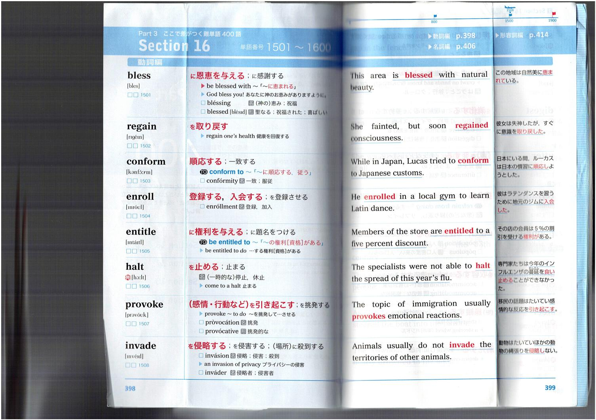
| ID | Word | 日本語意味 | 例文 (EN) | 例文 (JP) |
|---|---|---|---|---|
| 1501 | bless | に恩恵を与える；に感謝する | This area is blessed with natural beauty. | この地域は自然の美しさに恵まれている。 |
| 1502 | regain | を取り戻す | She fainted, but soon regained consciousness. | 彼女は失神したが、すぐに意識を取り戻した。 |
| 1503 | conform | 順応する；一致する | While in Japan, Lucas tried to conform to Japanese customs. | 日本にいる間、ルーカスは日本の慣習に順応しようとした。 |
| 1504 | enroll | 登録する，入会する | He enrolled in a local gym to learn Latin dance. | 彼はラテンダンスを習うために地元のジムに入会した。 |
| 1505 | entitle | に権利を与える；に題名をつける | Members of the store are entitled to a five percent discount. | その店の会員は5%の割引を受ける権利がある。 |
| 1506 | halt | を止める；止まる | The specialists were not able to halt the spread of this year's flu. | 専門家たちは今年のインフルエンザの蔓延を食い止めることができなかった。 |
| 1507 | provoke | （感情・行動など）を引き起こす；を挑発する | The topic of immigration usually provokes emotional reactions. | 移民の話題はたいてい感情的な反応を引き起こす。 |
| 1508 | invade | を侵略する；を侵害する；（場所）に殺到する | Animals usually do not invade the territories of other animals. | 動物はたいていほかの動物の領域を侵略しない。 |
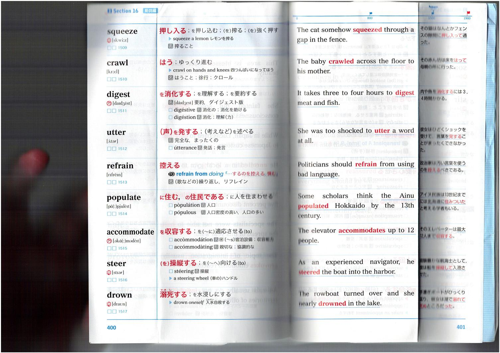
| ID | Word | 日本語意味 | 例文 (EN) | 例文 (JP) |
|---|---|---|---|---|
| 1509 | squeeze | 押し入る；を押し込む；（を）搾る；（を）強く押す | The cat somehow squeezed through a gap in the fence. | その猫はなんとかフェンスの隙間をすり抜けて入って通った。 |
| 1510 | crawl | はう；ゆっくり進む | The baby crawled across the floor to his mother. | その赤ん坊は床をはって母親の所に行った。 |
| 1511 | digest | を消化する；を理解する；を要約する | It takes three to four hours to digest meat and fish. | 肉や魚を消化するには3、4時間かかる。 |
| 1512 | utter | （声）を発する；（考えなど）を述べる | She was too shocked to utter a word at all. | 彼女はひどくショックを受けて、何一言発することができなかった。 |
| 1513 | refrain | 控える | Politicians should refrain from using bad language. | 政治家は汚い言葉を使うのを控えるべきである。 |
| 1514 | populate | に住む、の住民である；に人を住まわせる | Some scholars think the Ainu populated Hokkaido by the 13th century. | アイヌ民族は13世紀までに北海道に住みついたと考える学者もいる。 |
| 1515 | accommodate | を収容する；を（～に）適応させる（to） | The elevator accommodates up to 12 people. | そのエレベーターは最大12人を乗せることができる。 |
| 1516 | steer | （を）操縦する；を（～へ）向ける（to） | As an experienced navigator, he steered the boat into the harbor. | 熟練した航海士として、彼は船を港に操縦して入った。 |
| 1517 | drown | 溺死する；を水没しにする | The rowboat turned over and she nearly drowned in the lake. | ボートがひっくり返り、彼女は湖で溺れそうになった。 |
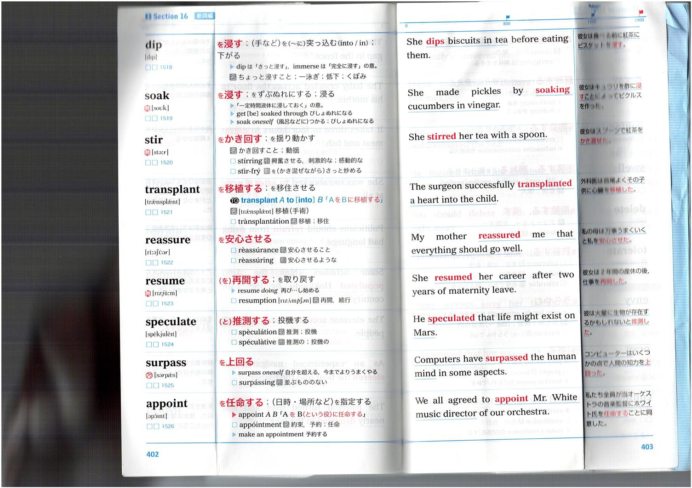
| ID | Word | 日本語意味 | 例文 (EN) | 例文 (JP) |
|---|---|---|---|---|
| 1518 | dip | を浸す；（手など）を（～に）突っ込む | She dips biscuits in tea before eating them. | 彼女は食べる前にビスケットを紅茶に浸す。 |
| 1519 | soak | を浸す；をずぶぬれにする | She made pickles by soaking cucumbers in vinegar. | 彼女はキュウリを酢に漬けてぬか漬けを作った。 |
| 1520 | stir | をかき回す；を振り動かす | She stirred her tea with a spoon. | 彼女はスプーンで紅茶をかき混ぜた。 |
| 1521 | transplant | を移植する；を移住させる | The surgeon successfully transplanted a heart into the child. | 外科医はその子供に心臓を移植することに成功した。 |
| 1522 | reassure | を安心させる | My mother reassured me that everything should go well. | 母は私に全てうまくいくと安心させてくれた。 |
| 1523 | resume | （を）再開する；を取り戻す | She resumed her career after two years of maternity leave. | 彼女は2年間の産休の後、仕事を再開した。 |
| 1524 | speculate | （と）推測する；投機する | He speculated that life might exist on Mars. | 彼は火星に生命が存在するかもしれないと推測した。 |
| 1525 | surpass | を上回る | Computers have surpassed the human mind in some aspects. | コンピューターはいくつかの点で人間の知力を上回った。 |
| 1526 | appoint | を任命する；（日時・場所など）を指定する | We all agreed to appoint Mr. White music director of our orchestra. | 私たちは全員がホワイト氏をオーケストラの音楽監督に任命することに同意した。 |
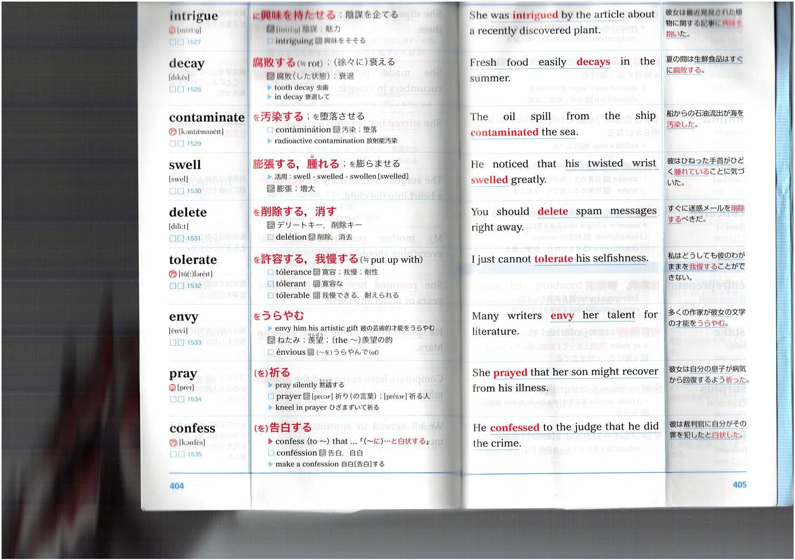
| ID | Word | 日本語意味 | 例文 (EN) | 例文 (JP) |
|---|---|---|---|---|
| 1527 | intrigue | に興味を持たせる；陰謀を企てる | She was intrigued by the article about a recently discovered plant. | 彼女は最近発見された植物に関する記事に興味を持った。 |
| 1528 | decay | 腐敗する；（徐々に）衰える | Fresh food easily decays in the summer. | 夏の間は生鮮食品はすぐに腐敗する。 |
| 1529 | contaminate | を汚染する；を堕落させる | The oil spill from the ship contaminated the sea. | 船からの石油流出が海を汚染した。 |
| 1530 | swell | 膨張する、膨れる；を膨らませる | He noticed that his twisted wrist swelled greatly. | 彼はひねった手首がひどく膨れていることに気づいた。 |
| 1531 | delete | を削除する、消す | You should delete spam messages right away. | すぐに迷惑メールを削除するべきだ。 |
| 1532 | tolerate | を許容する、我慢する | I just cannot tolerate his selfishness. | 私はどうしても彼のわがままを我慢することができない。 |
| 1533 | envy | をうらやむ | Many writers envy her talent for literature. | 多くの作家が彼女の文学の才能をうらやむ。 |
| 1534 | pray | （を）祈る | She prayed that her son might recover from his illness. | 彼女は自分の息子が病気から回復するよう祈った。 |
| 1535 | confess | （を）告白する | He confessed to the judge that he did the crime. | 彼は裁判官に自分がその罪を犯したと告白した。 |
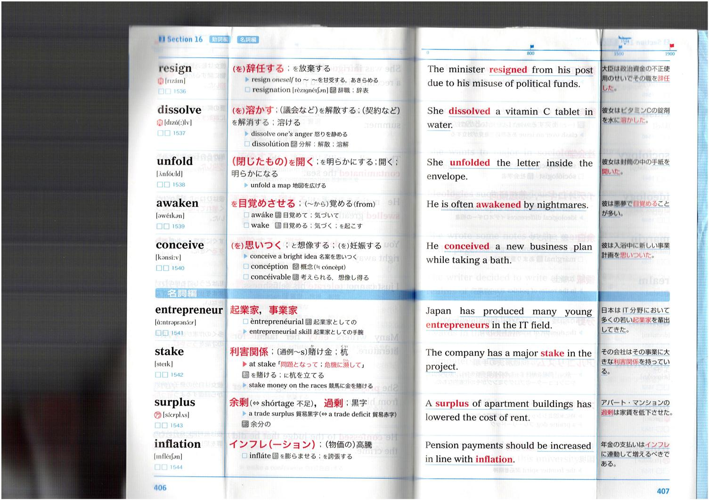
| ID | Word | 日本語意味 | 例文 (EN) | 例文 (JP) |
|---|---|---|---|---|
| 1536 | resign | 辞任する；を放棄する | The minister resigned from his post due to his misuse of political funds. | 大臣は政治資金の不正使用のためにその地位を辞任した。 |
| 1537 | dissolve | 溶かす；(議会などを)解散する；(契約などを)解消する；溶ける | She dissolved a vitamin C tablet in water. | 彼女はビタミンCの錠剤を水に溶かした。 |
| 1538 | unfold | (閉じたもの)を開く；を明らかにする；開く；明らかになる | She unfolded the letter inside the envelope. | 彼女は封筒の中の手紙を開いた。 |
| 1539 | awaken | を目覚めさせる；〜から覚める | He is often awakened by nightmares. | 彼は悪夢で目覚めることが多い。 |
| 1540 | conceive | (考えを)思いつく；と想像する；(子)を妊娠する | He conceived a new business plan while taking a bath. | 彼は入浴中に新しい事業計画を思いついた。 |
| 1541 | entrepreneur | 起業家，事業家 | Japan has produced many young entrepreneurs in the IT field. | 日本はIT分野において多くの若い起業家を輩出してきた。 |
| 1542 | stake | 利害関係；(通例〜s)賭け金；杭 | The company has a major stake in the project. | その会社はその事業に大きな利害関係を持っている。 |
| 1543 | surplus | 余剰；過剰；黒字 | A surplus of apartment buildings has lowered the cost of rent. | アパート・マンションの過剰は賃貸を低下させた。 |
| 1544 | inflation | インフレ(ーション)；物価の高騰 | Pension payments should be increased in line with inflation. | 年金の支払いはインフレに連動して増えるべきである。 |
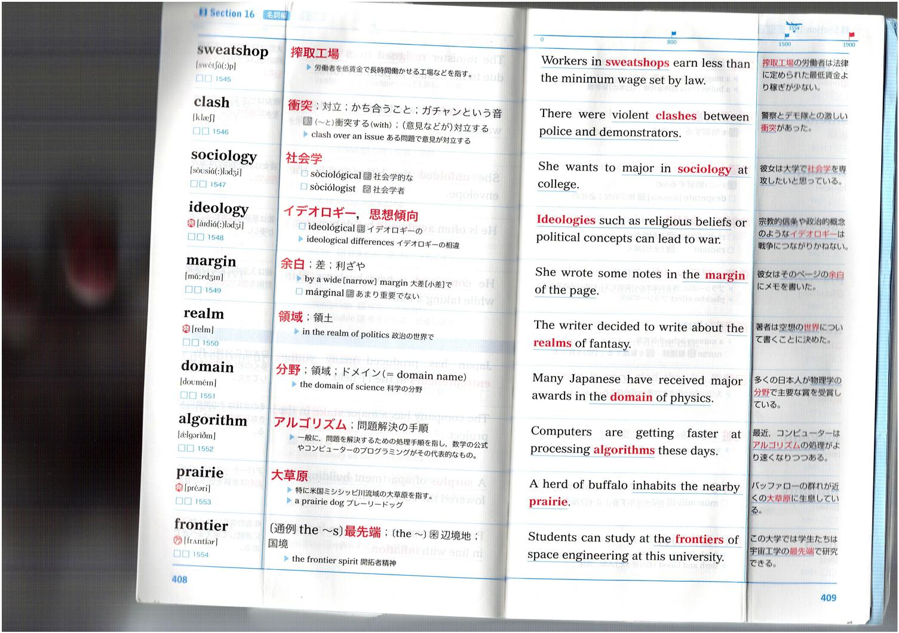
| ID | Word | 日本語意味 | 例文 (EN) | 例文 (JP) |
|---|---|---|---|---|
| 1546 | clash | 対立；かち合うこと；ガチャンという音 | There were violent clashes between police and demonstrators. | 警察とデモ隊との激しい衝突があった。 |
| 1547 | sociology | 社会学 | She wants to major in sociology at college. | 彼女は大学で社会学を専攻したいと思っている。 |
| 1548 | ideology | イデオロギー、思想傾向 | Ideologies such as religious beliefs or political concepts can lead to war. | 宗教的信条や政治的概念のようなイデオロギーは戦争につながりかねない。 |
| 1549 | margin | 差；利ざや | She wrote some notes in the margin of the page. | 彼女はそのページの余白にメモを書いた。 |
| 1550 | realm | 領域；領土 | The writer decided to write about the realms of fantasy. | 著者は幻想の世界について書くことにした。 |
| 1551 | domain | 分野；領域；ドメイン | Many Japanese have received major awards in the domain of physics. | 多くの日本人が物理学の分野で主要な賞を受賞している。 |
| 1552 | algorithm | アルゴリズム：問題解決の手順 | Computers are getting faster at processing algorithms these days. | 近ごろコンピューターはアルゴリズムの処理がより速くなりつつある。 |
| 1553 | prairie | 大草原 | A herd of buffalo inhabits the nearby prairie. | バッファローの群れが近くの大草原に生息している。 |
| 1554 | frontier | 最先端；辺境地；国境 | Students can study at the frontiers of space engineering at this university. | この大学では学生たちは宇宙工学の最先端で研究できる。 |
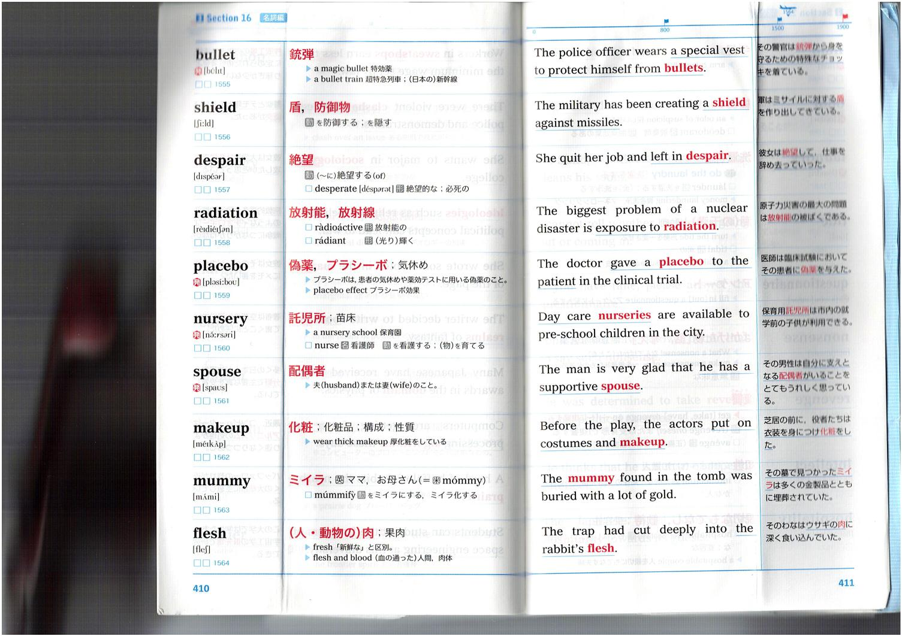
| ID | Word | 日本語意味 | 例文 (EN) | 例文 (JP) |
|---|---|---|---|---|
| 1555 | bullet | 銃弾 | The police officer wears a special vest to protect himself from bullets. | その警官は銃弾から身を守るための特殊なベストを着ている。 |
| 1556 | shield | 盾、防御物 | The military has been creating a shield against missiles. | 軍はミサイルに対する防衛装置を作り出してきている。 |
| 1557 | despair | 絶望 | She quit her job and left in despair. | 彼女は絶望して、仕事を辞めて去って行った。 |
| 1558 | radiation | 放射能、放射線 | The biggest problem of a nuclear disaster is exposure to radiation. | 原子力災害の最大の問題は放射線の被曝である。 |
| 1559 | placebo | 偽薬、プラシーボ；気休め | The doctor gave a placebo to the patient in the clinical trial. | 医師は臨床試験においてその患者に偽薬を与えた。 |
| 1560 | nursery | 託児所；苗床 | Day care nurseries are available to pre-school children in the city. | 保育用託児所は市内の就学前の子供が利用できる。 |
| 1561 | spouse | 配偶者 | The man is very glad that he has a supportive spouse. | その男性は自分に支えとなる配偶者がいることをとてもありがたく思っている。 |
| 1562 | makeup | 化粧；化粧品；構成；性質 | Before the play, the actors put on costumes and makeup. | 芝居の前に、役者たちは衣装を身に付け化粧をした。 |
| 1563 | mummy | ミイラ；腐ママ、お母さん | The mummy found in the tomb was buried with a lot of gold. | その墓で見つかったミイラは多くの金製品とともに埋葬されていた。 |
| 1564 | flesh | （人・動物の）肉；皮肉 | The trap had cut deeply into the rabbit's flesh. | そのわなはウサギの肉に深く食い込んでいた。 |
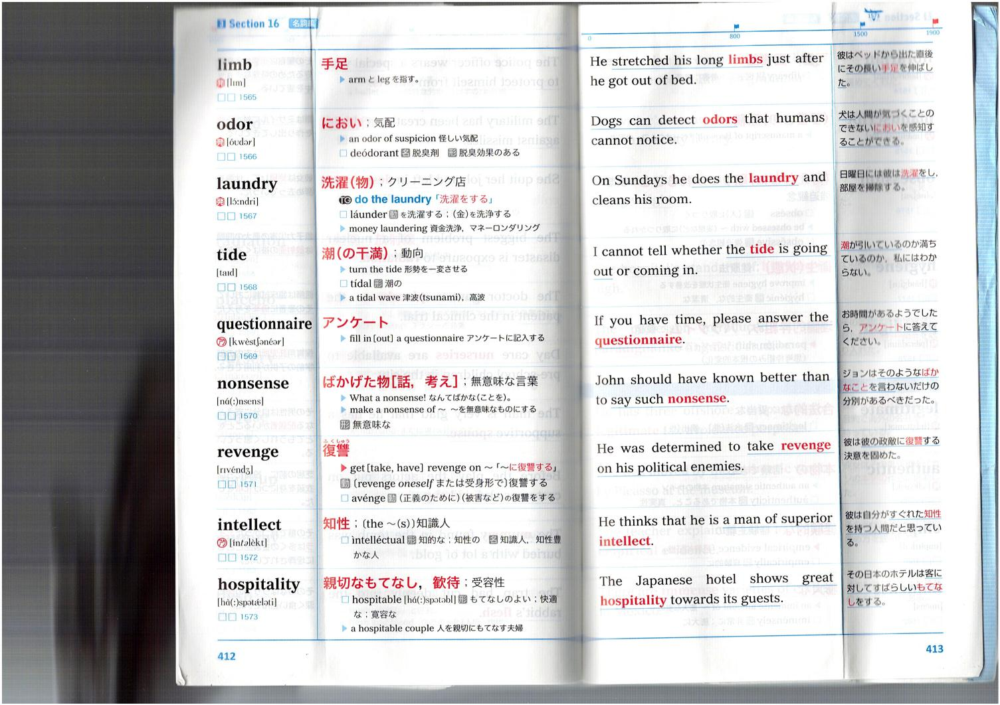
| ID | Word | 日本語意味 | 例文 (EN) | 例文 (JP) |
|---|---|---|---|---|
| 1565 | limb | 手足 | He stretched his long limbs just after he got out of bed. | 彼はベッドから出た直後にその長い手足を伸ばした。 |
| 1566 | odor | におい；気配 | Dogs can detect odors that humans cannot notice. | 犬は人間が気づくことのできないにおいを検知することができる。 |
| 1567 | laundry | 洗濯（物）；クリーニング店 | On Sundays he does the laundry and cleans his room. | 日曜日には彼は洗濯をし、部屋を掃除する。 |
| 1568 | tide | 潮の干満；動向 | I cannot tell whether the tide is going out or coming in. | 潮が引いているのか満ちているのか、私にはわからない。 |
| 1569 | questionnaire | アンケート | If you have time, please answer the questionnaire. | お時間がありようでしたら、アンケートに答えてください。 |
| 1570 | nonsense | ばかげた物話、考え；無意味な言葉 | John should have known better than to say such nonsense. | ジョンはそのようなばかなことを言うよりも分別があるべきだった。 |
| 1571 | revenge | 復讐 | He was determined to take revenge on his political enemies. | 彼は政敵に復讐する決意を固めた。 |
| 1572 | intellect | 知性；（the 〜(s)）知識人 | He thinks that he is a man of superior intellect. | 彼は自分がすぐれた知性を持つ人間だと思っている。 |
| 1573 | hospitality | 親切なもてなし，歓待；受容性 | The Japanese hotel shows great hospitality towards its guests. | その日本のホテルは客に対してすばらしいもてなしをする。 |
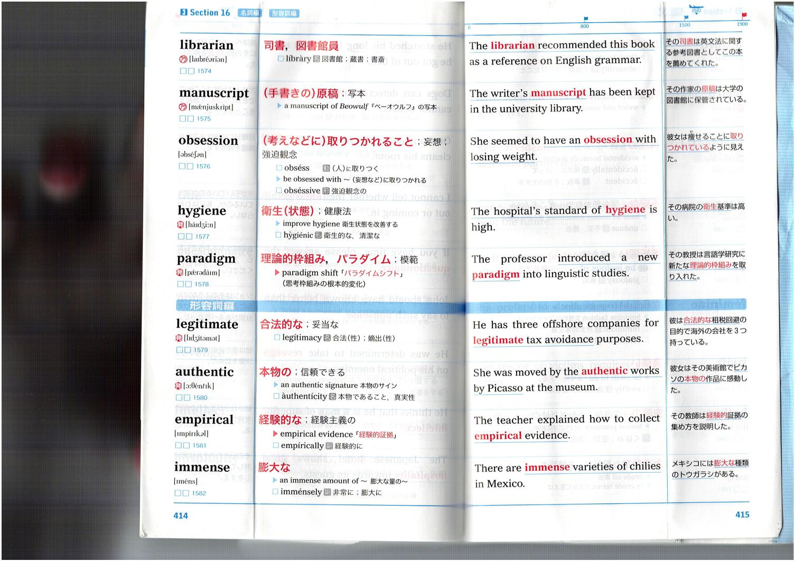
| ID | Word | 日本語意味 | 例文 (EN) | 例文 (JP) |
|---|---|---|---|---|
| 1574 | librarian | 司書、図書館員 | The librarian recommended this book as a reference on English grammar. | その司書は英文法に関する参考図書としてこの本を薦めてくれた。 |
| 1575 | manuscript | (手書きの)原稿；写本 | The writer's manuscript has been kept in the university library. | その作家の原稿は大学の図書館に保管されている。 |
| 1576 | obsession | (考えなどに)取りつかれること；妄想；強迫観念 | She seemed to have an obsession with losing weight. | 彼女は痩せることに取りつかれているように見えた。 |
| 1577 | hygiene | 衛生(状態)；健康法 | The hospital's standard of hygiene is high. | その病院の衛生基準は高い。 |
| 1578 | paradigm | 理論的枠組み、パラダイム；模範 | The professor introduced a new paradigm into linguistic studies. | その教授は言語学研究に新たな理論的枠組みを取り入れた。 |
| 1579 | legitimate | 合法的な；妥当な | He has three offshore companies for legitimate tax avoidance purposes. | 彼は合法的な租税回避の目的で海外の会社を3つ持っている。 |
| 1580 | authentic | 本物の；信頼できる | She was moved by the authentic works by Picasso at the museum. | 彼女はその美術館でピカソの本物の作品に感動した。 |
| 1581 | empirical | 経験的な；経験主義の | The teacher explained how to collect empirical evidence. | その教師は経験的証拠の集め方を説明した。 |
| 1582 | immense | 膨大な | There are immense varieties of chilies in Mexico. | メキシコには膨大な種類のトウガラシがある。 |
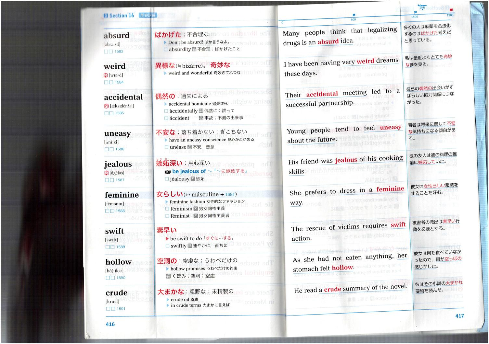
| ID | Word | 日本語意味 | 例文 (EN) | 例文 (JP) |
|---|---|---|---|---|
| 1583 | absurd | ばかげた；不合理な | Many people think that legalizing drugs is an absurd idea. | 多くの人は麻薬を合法化するのはばかげた考えだと思っている。 |
| 1584 | weird | 異様な（≒bizarre）；奇妙な | I have been having very weird dreams these days. | 私は最近よくとても奇妙な夢を見る。 |
| 1585 | accidental | 偶然の；過失による | Their accidental meeting led to a successful partnership. | 彼らの偶然の出会いがすばらしい協力関係につながった。 |
| 1586 | uneasy | 不安な；落ち着かない；ぎこちない | Young people tend to feel uneasy about the future. | 若者は将来に関して不安な気持ちになる傾向がある。 |
| 1587 | jealous | 嫉妬深い；用心深い | His friend was jealous of his cooking skills. | 彼の友人は彼の料理の腕前に嫉妬していた。 |
| 1588 | feminine | 女らしい | She prefers to dress in a feminine way. | 彼女は女らしい服装をすることを好む。 |
| 1589 | swift | 素早い | The rescue of victims requires swift action. | 被害者の救出には素早い行動を必要とする。 |
| 1590 | hollow | 空洞の；空虚な；うわべだけの | As she had not eaten anything, her stomach felt hollow. | 彼女は何も食べていなかったので、胃が空っぽの感じがした。 |
| 1591 | crude | 大まかな；粗野の；未精製の | He read a crude summary of the novel. | 彼はその小説の大まかな要約を読んだ。 |
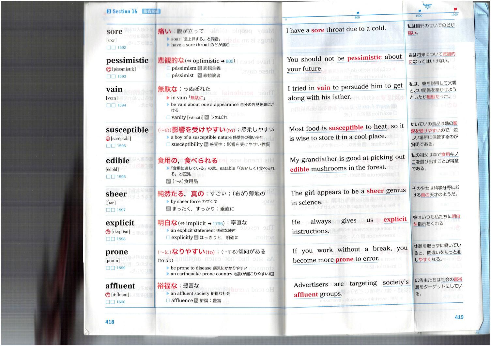
| ID | Word | 日本語意味 | 例文 (EN) | 例文 (JP) |
|---|---|---|---|---|
| 1592 | sore | 痛い；腹が立って | I have a sore throat due to a cold. | 私は風邪のせいでのどが痛い。 |
| 1593 | pessimistic | 悲観的な | You should not be pessimistic about your future. | 君は将来について悲観的になってはいけない。 |
| 1594 | vain | 無駄な；うぬぼれた | I tried in vain to persuade him to get along with his father. | 私は、彼を説得して父親と上手い関係を保とうとしようとしたが無駄だった。 |
| 1595 | susceptible | 影響を受けやすい；感染しやすい | Most food is susceptible to heat, so it is wise to store it in a cool place. | たいていの食品は熱の影響を受けやすいので、涼しい場所に保管するのが賢明である。 |
| 1596 | edible | 食用な、食べられる | My grandfather is good at picking out edible mushrooms in the forest. | 私の祖父は森で食用キノコを選び出すことが得意である。 |
| 1597 | sheer | 純粋な、真の；すごい；(布が)薄地の | The girl appears to be a sheer genius in science. | その少女は科学分野における真の天才のようだ。 |
| 1598 | explicit | 明白な | He always gives us explicit instructions. | 彼はいつも私たちに明白な指示をくれる。 |
| 1599 | prone | なりやすい | If you work without a break, you become more prone to error. | 休憩を取らずに働いていると、間違いをおかしやすくなる。 |
| 1600 | affluent | 裕福な | Advertisers are targeting society's affluent groups. | 広告主たちは社会の裕福層をターゲットにしている。 |